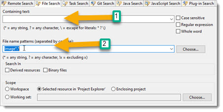
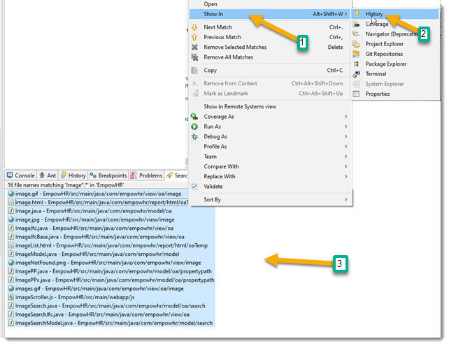

The name of our last Object "Image" caused some problems, since there are other classes with the same name. We can fix that by changing the Object to "AppImage", and everything else will adjust (rename). We will also need to delete the files that were generated for the "Image" Object, since OABuilder does not delete files.
From Eclipse, you can do a "Search / File ...", and select Image*.* to get a list.

Then use the following to delete all of them.

CheckPoint #5. If needed, get the model and the data files.
Regen and rerun.